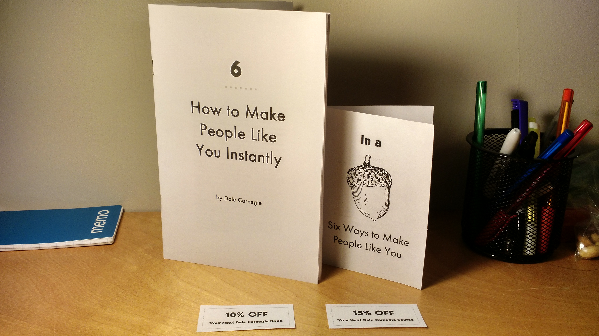
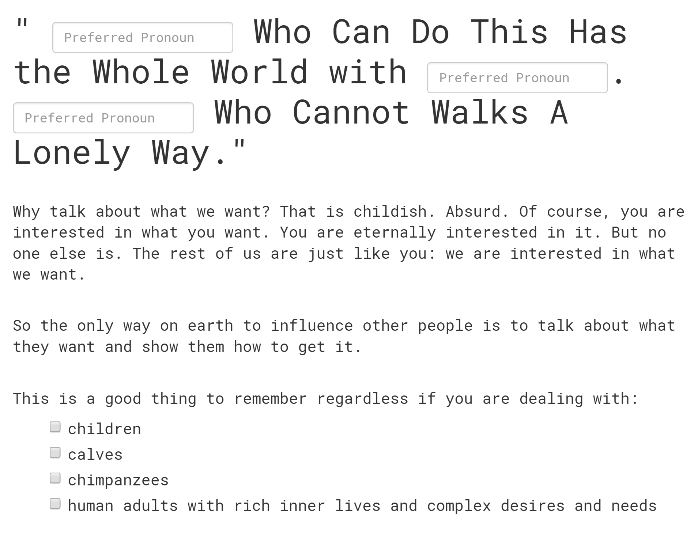
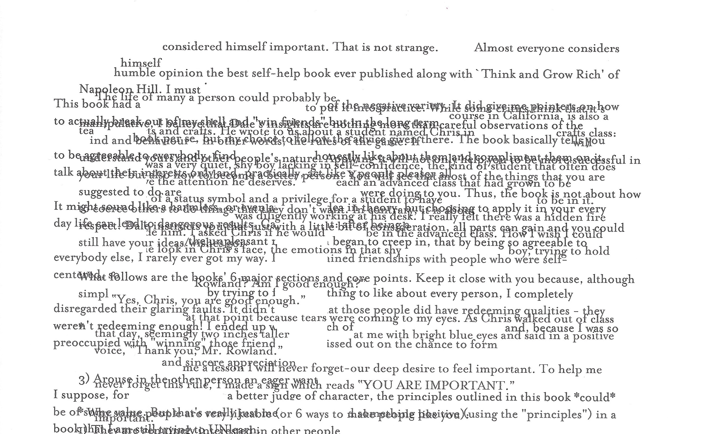

Author's Statement
Autodidactism, or the practice of learning skills or subjects in which one lacks formal education, might be commonly associated with entrepreneurs, such as Bill Gates or Steve Jobs, or Maker Culture. Autodidactism is intertwined with rags-to-riches narratives or the Horatio Alger myth, in which the (usually white, middle-class male) individual succeeds against all odds and is valorized for it. In some contexts, autodidactism allows marginalized people to circumvent formal institutions designed to exclude them (see Pomata, Radcliffe, and Williams). But as critques of the Horatio Alger myth (Dalton), Maker Culture (Chachra; Hertz), and self-help (McGee) suggest, common autodidactic narratives emphasize a masculine, individualistic, essentialist kind of genius—one that effaces social inequalities and the gendered politics of labour, thereby perpetuating the very status quo it supposedly resists.
As an instance of autodidactism or self-help, Dale Carnegie’s How to Win Friends and Influence People (1936) seems ambivalent or self-contradictory: it does not give bad advice, per se, but its techniques are often criticized for their combative tone or manipulative goals. For example, one chapter, titled “How to Win People to Your Way of Thinking,” calls conversants “opponents” while simultaneously advising one to “thank [them] sincerely” and honestly “[a]pologize for your mistakes.” The emphasis on “winning” against opponents uses the language of competitive capitalism, which posits every interaction as necessarily having winners and losers. Theorized in economic terms, the self in self-help is more than a commodity or product: it is capital. Moreover, self-help creates what McGee calls a “belaboured self” or subjectivity wherein individuals must embrace “a lifestyle of self-scrutiny and self-affirmation” that requires continual, immaterial, and often unrecognized forms of labour (18). Such labour is also naturalized; it is denied and obscured in service of “authenticity” and, in the case of the self-help author, authority. Self-help narratives also commonly diminish or disavow the immaterial labour of others in shaping the self—labour performed by women far more often than by men.

The first prototype foregrounds the labour often omitted in self-help and prototypes it back into the text. It changes two of the typefaces (fonts) of How to Win to Mrs. Eaves and Kabel. Mrs. Eaves, designed by Zuzana Licko in 1996, is named for Sarah Eaves, the housekeeper and eventual wife of John Baskerville. Although John Baskerville is far more famous as the creator of the most trustworthy (read: authoritative) font, Sarah Eaves helped with typesetting and printing and thus contributed much unrecognized labour over time. Meanwhile, Kabel is one of the first fonts used in the board game, Monopoly. Perhaps the perfect game for training good capitalists, the game’s invention is often soley credited to Charles Darrow in a rags-to-riches narrative. In fact, one of its chief contributors to its development was a woman and anti-monopolist, Elizabeth Magie Phillips (see Pilon). Compared to a parody, which might loudly announce itself, this prototype is subtler. This subtlety aligns the prototype with forgery—a category that Grafton distinguishes by the subtle detail that suggests, convinces, or, conversely, gives the forgery away.
Although forgery and criticism may each appear antithetical to the other, they share a long and tangled history. While forgeries are created with the intent to deceive, critics parse the genuine from the forgeries. However, forgers are like critics in that both create, articulate, and test interpretive systems for assessing truth claims or authority (see Grafton). In this way, we might consider forgery as a kind of criticism. More recently, editorial theory and Samuels and McGann’s deformative criticism have challenged pure authorial transmission and the stable object of interpretation as the origins of meaning or authority. Following these, forgery as criticism does not stop at the object or text itself; instead, it materially reconfigures the text to create new situations for interpration, enabling and articulating meanings that we might not otherwise consider.
By remaking a historical object, a forgery also proposes and enacts an alternative history. Although a forgery ostensibly seeks perfect recreation, in practice, it —as Grafton notes—must contain familiar mental landmarks for the audience it aims to fool. A forgery does not persuade by accurately recreating objective history, but by playing upon the interpretive systems and historical record by which it is judged. Put differently, a forgery asks by what measures we render something—or someone, for that matter—authentic. Forgery, then, seems particularly apt for autodidactism or self-help since both genres replace authenticity with credibility. In McGee's words, “One does not need to be an authority if one can appear authoritative” (169).

The second prototype intervenes at the level of ethos or authorial voice. How to Win’s major aesthetic markers, which it shares with the self-help genre more generally, include the use of imperative verbs and pronouns such as “you” or the royal “we” to denote the reader, whom he assumes—at least for the sake of argument—to share his opinion. Taken together, Carnegie creates a hierarchy wherein he, as the all-knowing authority, passes directives or commands down to the reader. In response, this prototype recreates How to Win as a fillable form, allowing a user to fill in parts of Carnegie’s text with their own words. This prototype creates (limited) room for a user to not only disagree but also to write that disagreement into the text. By materially altering the text, forgery as criticism also complicates critical distance or objectivity: it forces critics to acknowledge, recognize, and reckon with multiplicity (of voices) and complicity.

The third prototype also engages with multiplicity, although it does not quite fit the definition of a forgery (or if it is, it would not be a very convincing one). Since its publication, How to Win has been republished in numerous editions, variations, and languages and parodied or referenced elsewhere. It is difficult, if not impossible, to encounter it for the first time in a North American context. That is, Carnegie’s voice is woven, or perhaps “corrupted,” with the voices of others. This prototype literalizes this multiplicity by overlaying or overlapping popular reviews of How to Win onto Carnegie’s text, such that the texts obscure or interlock with each other to create a new, mixed text.
The final prototype, a twitter bot, does something similar: it uses a Markov chain, a forecasting model common in mathematics and the sciences, to generate a text statistically similar to the corpus it is given. For example, given How to Win, a Markov chain would produce a text in the “voice” of Carnegie, although the sentences themselves might never be things Carnegie actually said. The corpus of this particular bot mixes How to Win with negative reviews of it from Goodreads.com to produce, and tweet, Carnegiean imperatives or “principles” for winning friends and influencing people. As an automaton, Carnegie Bot may not be a very convincing forgery, but he may be, to return to self-help, the ideal belaboured self who never tires and ostensibly requires no help from others. Self-help discourse, as McGee writes, relies on “the liberal notion of an autonomous self” that denies “the importance of—even the existence of the labours of others and the forces of history” (172). My prototypes foreground the contingency of autodidactism—on labour, on history, on communities of readers—that is otherwise hidden or disavowed.
Autodidactism, and even forgery, is also contingent on who does it and to what ends. For example, in feminist and African American contexts, education has a long history as an explicitly anti-oppressive practice embedded in communities (see Williams or bell hooks). Indeed, even in Carnegie’s time (first half of the 20th century), some blacks took on the theme of self-help as a means to social, economic, and racial advancement by countering myths of black inferiority (Chireau 124). In this context, presenting an intelligent, well-educated persona, as a kind of forgery of the self, may protect individuals who would be judged and punished for being otherwise. More literal forgeries in this vein include illegal documents created for “paper families” in the wake of the Chinese Exclusion Acts in Canada and the United States. These forgeries are not only forms of subtle resistance against racist policies and institutions; they highlight how forgeries provide access to resources and thus carry material consequences. Forgeries do not just conceive of alternative histories—they call them into material being. Perhaps in learning from forgery and autodidactism, we might learn to forge better futures.